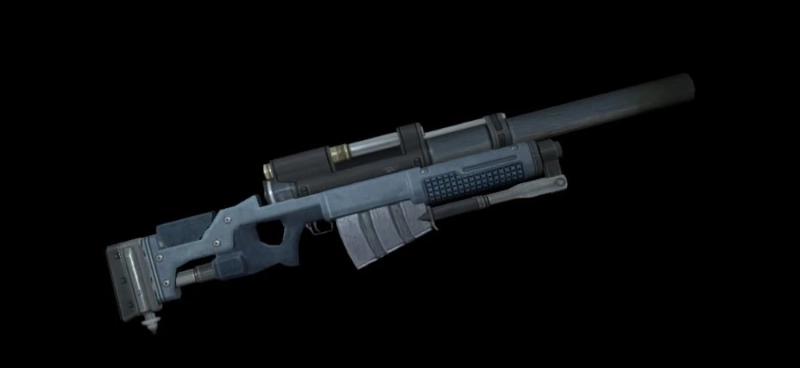

Puñal

Descripcion
Como su propio nombre indica, es un arma de defensa personal. Cuando un zombi se acerca demasiado se lo puede apuñalar en la cabeza con esta daga para rechazarlo o mantenerlo a distancia, pero no es suficiente para matarlo.
Granada destelleante
Descripcion
Un arma de defensa personal, exclusiva de Chris. Si es atacado por un zombi cuando tiene equipada esta granada, puede sacarla y ponerla en la boca de su atacante.
Pistola de descargas
Descripcion
Arma de defensa personal, exclusiva de Jill. Si es atacada por un zombi o cualquier enemigo menor que pueda agarrar cuando tiene esta arma equipada, puede usarla para emitir una potente descarga eléctrica a su oponente que incluso puede desorientarlo temporalmente, momento que puede ser aprovechado para acabar con el o escapar.
Pistola de autodefensa
Descripcion
Arma de defensa personal con un alto poder destructivo, recomendable para enfrentar a enemigos muy fuertes
Cuchillo de supervivencia
Descripcion
Ambos personajes tienen este cuchillo militar ya desde el inicio del videojuego. No es muy eficaz con los enemigos, pero es mucho mejor que no tener nada.
Beretta M92FS
Descripcion
Es el arma básica de los miembros de S.T.A.R.S. Se trata de una pistola automática con capacidad para 15 balas de 9 mm. Las municiones para esta arma son abundantes y se encuentran en muchos lugares de la mansión.
Escopeta
Descripcion
Esta escopeta de caza es un arma importante y de mucha utilidad. Tiene capacidad para 6 cartuchos y su poder de fuego la hace buena especialmente para acabar con enemigos que estén juntos.
Escopeta de asalto
Descripcion
Con capacidad de 10 cartuchos y disparo mas rápido, la escopeta de asalto es una mejor opción que la escopeta normal, a la cual supera completamente.
Lanzagranadas
Descripcion
Esta poderosa arma solo se puede obtener con Jill. Puede disparar 3 distintos tipos de munición: granadas explosivas, granadas de ácido y granadas incendiarias, cada uno con sus particulares efectos, que la convierten en un arma muy recomendable para los enemigos resistentes o los jefes.
Lanzallamas
Descripcion
Arma muy potente que solo puede conseguirla Chris. Únicamente se puede usar en unas pocas habitaciones, pues hay un sistema de seguridad que impide que salga de la zona. Lleva el combustible al 100% y puede lanzar fuego a máxima potencia durante 9 segundos ininterrumpidos.
Revólver magnum

Descripcion
Este revolver, cargado con una munición potente, es una de las armas mas poderosas en el juego. Tiene capacidad para 6 balas de calibre 357.
Lanzacohetes
Descripcion
El arma más poderosa del juego normal, capaz de destruir a cualquier enemigo de un solo disparo, excepto algunos jefes.
Lanzacohetes antitanques
Descripcion
La mejor arma del juego por su considerable capacidad de destrucción. Tiene munición infinita y un disparo basta para acabar con cualquier enemigo que no sea jefe. Este lanzacohetes aparece en el inventario después de haber terminado el juego en menos de 3 horas en modo normal o difícil.